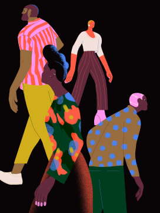

Xoana Herrera is an LA-based illustrator who creates sumptuous, stylish character scenes set in an ideal world. After training as a graphic designer in Argentina and working at Buck agency, she found her passion in illustration. Herrera also founded a feminist creative collective, Get it Girl, and aims to create innovative, complex, and accessible imagery suitable for both ad campaigns and children's books.
